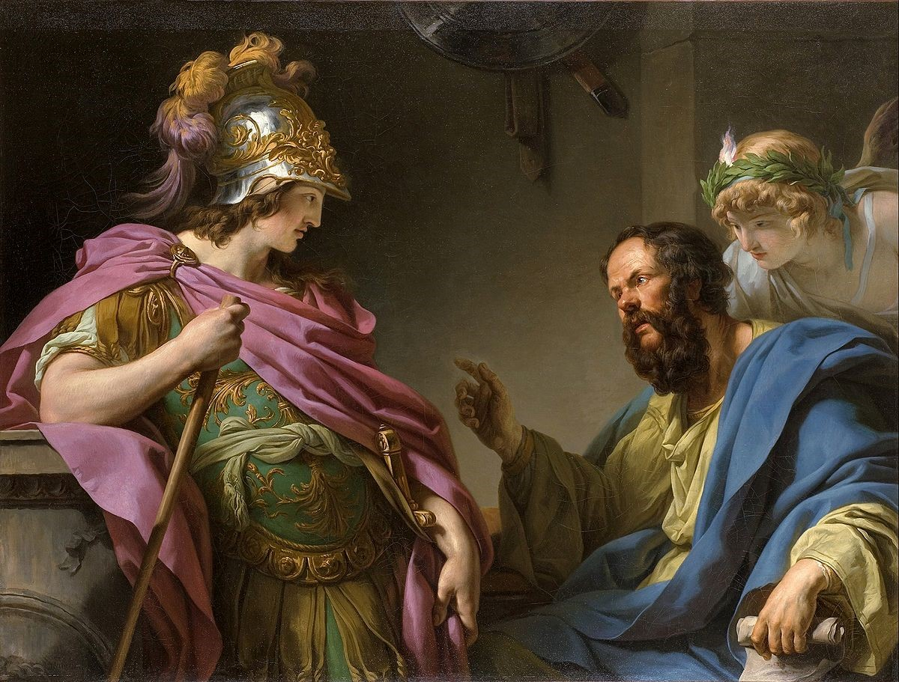

Alcibiades
Alcibiades was a young and rich general who wanted to prove himself. More specifically, he wanted to restart the Peloponnesian War, so he made alliances with Argos and other city-states to provoke the Spartans into war. The Spartan king at the moment (Agis II) responded to the provocation by mobilizing the entire Spartan army, and even some free Helots, to fight against Athens. In 418 B.C., the Battle of Mantinea took place; the Athenians fled!
Under the rule of Alcibiades, the Athenians then took over the island of Melos and forced the Melians to join the Delian League with the "humanitarian" excuse. The Melians tried to resist and the Athenians ended up killing all the men and sending all the women and children into slavery. Meanwhile, Alcibiades saw another opportunity to prove himself in Segesta, a city state in Sicily that needed help from the Athenian army. Therfore, he atteacked it, conquered it and gained resources. Nicias (the guy from the peace treaty) disagreed and stood up against the Athenian ruler by creating a "bluff." He pretended to agree with the idea, and then pushed it even further. He suggested to send more ships, hoplites, and everything else they got in huge numbers to Segesta; that way the Athenian people would think it was an absurd idea and drop it. However, his "brilliant" idea backfired, as his proposal was actually applauded by the Athenians and he was sent with Alcibiades to the conquering quest. Not long after, Alcibiades was accused of desecrating the Herms statues and sentenced to death in the shores of Siciliy. He ended up fleeing to Sparta.